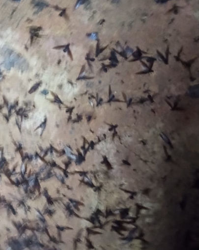
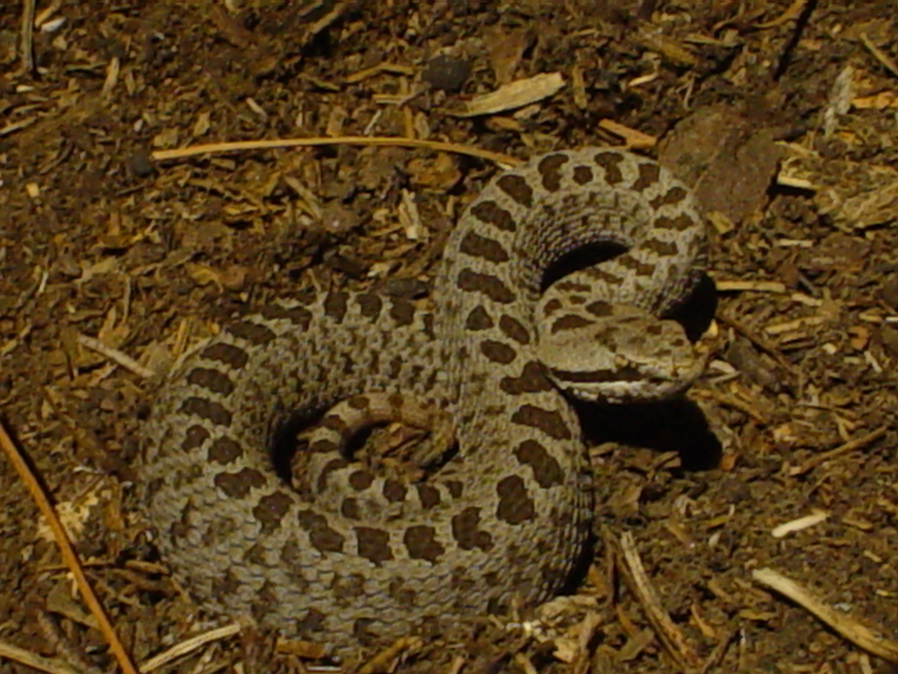
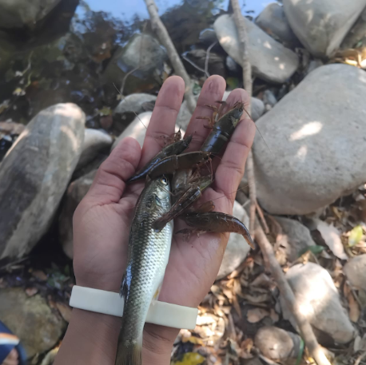
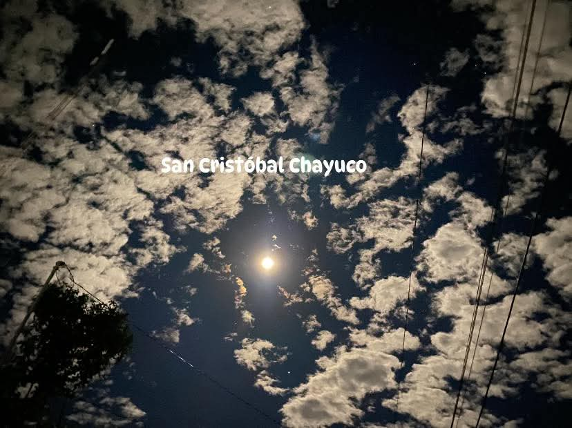

Insectos: Chapulín, chicharra, chicatana, arriera, barrendera, zancudo y gran variedad de gusanos.

Aves silvestres:
: Paloma, paloma ala blanca, chachalaca, gavilán, perico, zopilote, zanate, lechuza y tecolote.

Reptiles:
Víbora de cascabel, coralillo, culebra lechosa.

Especies acuáticas:
Camarón de río, cangrejos, blanquillas, mojarra.
Mantenimiento del equilibrio ecológico:
Cada especie cumple una función en su ecosistema, como controlar plagas, polinizar plantas o reciclar nutrientes. Si desaparecen, se pueden generar efectos en cadena que afecten todo el sistema.

La conservación de la fauna en San Cristóbal es crucial por diversas razones
Biodiversidad y resiliencia: Un ecosistema con alta diversidad es más resistente a cambios ambientales, enfermedades y desastres naturales.